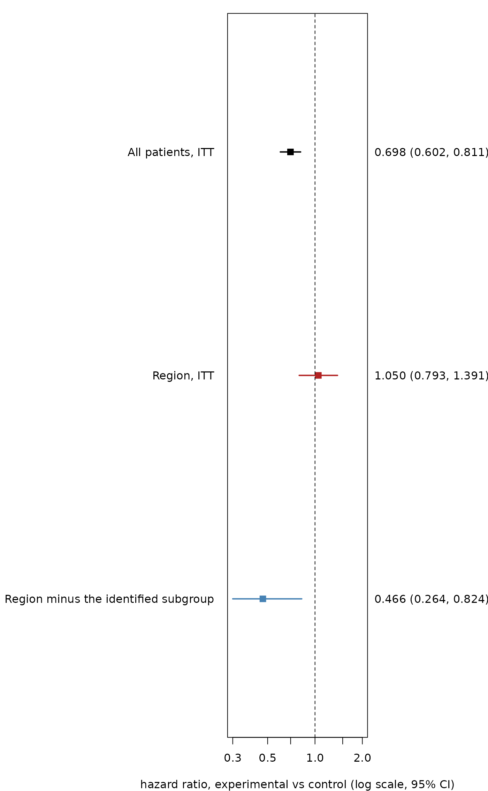

Regional-consistency analysis of an observed multiregional trial
Source:R/mrct_trial_analysis.R
mrct_trial_analysis.RdThe observed-trial counterpart of mrct_case_study(), running the same analysis
code: the all-patient and region Cox fits and the trigger; forestsearch() on the
non-region patients with the region's patients as the test set; the declared
subgroup \(\hat H\) applied to the whole trial; the four-set Cox summary; and
multiplier-resampling inference on \(\hat H\).
Usage
mrct_trial_analysis(
df,
outcome.name,
event.name,
treat.name,
id.name,
region.name,
truth.name = NULL,
fs_args = list(),
mr_inference = TRUE,
mr_inference_args = list(ci_method = "field", include_complement = TRUE,
field_complement = TRUE),
proceed_without_trigger = FALSE
)
# S3 method for class 'mrct_trial_analysis'
print(x, digits = 3, ...)
# S3 method for class 'mrct_trial_analysis'
plot(
x,
which = c("forest", "km"),
xlim = c(0.3, 2),
time_unit = NULL,
analysis_time = NULL,
...
)Arguments
- df
A data frame with one row per patient.
- outcome.name, event.name, treat.name
Columns: the time, the event indicator (1 = event) and the treatment (1 = experimental).
- id.name
The patient-id column;
forestsearch()needs one.- region.name
The observed region column (1 = in the region, 0 = not).
- truth.name
Optional column of a known harmed subgroup (1 = in \(H^*\)), as in simulation. It adds the region(\(G^*\)) row and the 2 x 2 tables of \(\hat H\) against \(H^*\); without it, as in a real trial, neither appears.
- fs_args
Named list of
forestsearch()arguments, as inmrct_case_study().confounders.nameis required.sg_focus,maxk,hr.threshold,hr.consistencyandpconsistency.thresholdnot given takemrct_case_study()'s defaults, andconf_forcedefaults tocharacter(0). The data, the column names, the display flags and the (sequential) parallel plan are set here.- mr_inference
Logical. Run multiplier resampling on \(\hat H\) (
fs_mr_inference()). DefaultTRUE.- mr_inference_args
List passed to
forestsearch(mr_inference_args = ); giveseedhere for a reproducible result. Default: the field method with the complement de-biased and given its own field.- proceed_without_trigger
Logical. Run the identifier on a trial without the trigger. Default
FALSE.- x
An
mrct_trial_analysisobject.- digits
Digits for hazard ratios. Default 3.
- ...
Unused.
- which
Any of
"forest","km". Default both.- xlim
Hazard-ratio range of the forest plot. Default
c(0.3, 2); intervals are clipped to it.- time_unit
Character. The label of the Kaplan-Meier time axis;
NULL(the default) labels it"time".- analysis_time
The Kaplan-Meier axis's upper limit.
NULL(the default) uses the longest follow-up in the trial.
Value
An object of class mrct_trial_analysis, a list with
stage: see the Stages section.trial: the trial (data.frame).fs: theforestsearch()result;mr_values()ormr_estimates_table()read its multiplier-resampling results.sets: the set table, as inmrct_four_sets(). The unadjusted Cox fits are its rows.in_Hhat: logical, per trial row: membership of \(\hat H\).confusion: withtruth.name, a list of two integer vectorsc(TP, FP, FN, TN)of \(\hat H\) against \(H^*\),nonregionandregion.Hhat: the definition ("none"when nothing is declared).mr:fs$mr_inference.trigger: logical: all-patient upper limit < 1.0 and region hazard ratio > 1.0.call_args: the column names and theforestsearch()arguments (without data).warnings: warnings raised byforestsearch(), muffled and kept here.
Stages
The result reports how far the pipeline went in $stage; none of these is an error.
The all-patient and region fits are always computed (the itt_all and itt_region
rows of $sets).
"not_positive": the all-patient upper 95% limit is not below 1.0."no_trigger": the trial is positive and the region's hazard ratio is not above 1.0."no_declaration": the identifier ran and declared nothing. As inmrct_case_study(),region_Ghatis then the whole region."complete": the identifier ran and declared \(\hat H\).
The identifier does not run at the first two stages, so fs, mr, in_Hhat and
confusion are NULL there, Hhat is NA, and $sets has no region_Ghat row.
With proceed_without_trigger = TRUE it runs regardless: the stage is then
"no_declaration" or "complete", and $trigger still reports the trigger.
See also
mrct_four_sets() for the sets alone; mrct_case_study() for a simulated
trial; mr_values() for the multiplier-resampling quantities.
Examples
set.seed(1)
n <- 800
d <- data.frame(id = seq_len(n), treat = rbinom(n, 1, 0.5), x1 = rnorm(n), x2 = rnorm(n))
# a harmed subgroup in every region, and more of it in the region
d$region <- rbinom(n, 1, plogis(-1.5 - 1.5 * d$x1))
d$time <- rexp(n, 0.1 * ifelse(d$treat == 1, ifelse(d$x1 < -0.6, 3, 0.45), 1))
d$event <- as.integer(d$time < 30)
d$time <- pmin(d$time, 30)
fit <- mrct_trial_analysis(
d, "time", "event", "treat", "id", region.name = "region",
fs_args = list(sg_focus = "hrMaxSG", confounders.name = c("x1", "x2"),
use_grf = FALSE, use_lasso = FALSE, fs.splits = 200),
mr_inference = FALSE)
fit$stage
#> [1] "complete"
fit
#> MRCT trial analysis: n = 800, region 'region'
#> Stage: complete
#> H-hat: {x1 <= -0.4}
#> Trigger (ITT ub < 1.0 and region ITT > 1.0): TRUE
#>
#> Set n exp n/events ctl n/events HR 95% CI
#> All patients, ITT 800 389/324 411/395 0.698 0.602, 0.811
#> Region, ITT 208 93/87 115/112 1.050 0.793, 1.391
#> Region minus H-hat (G-hat) 58 28/23 30/29 0.466 0.264, 0.824
#>
#> Multiplier resampling: not run, or nothing declared.
plot(fit, which = "forest")
